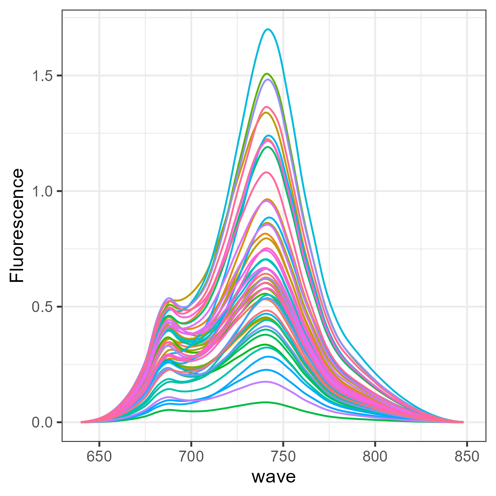
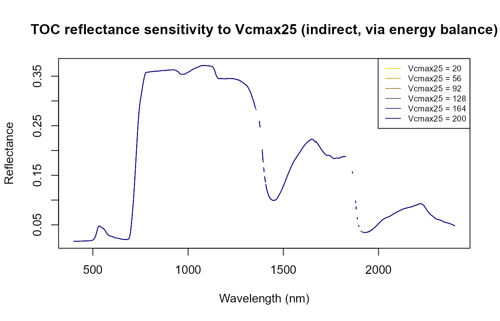

Tutorials overview
From a first simulation to a full course manual: sensor convolution, sensitivity analysis, and trait inversion, in R and Python. Every tutorial linked below is verified by actually running it end-to-end — not just written. This page groups all 31 tutorials by what they're about, with a real generated figure from each area, as a five-minute visual map before you dive into any one of them.
Tip: use your browser's Print → Save as PDF to keep an offline copy of this page.
ToolsRTMLeaf, canopy, soil, atmosphere models
Five leaf models (PROSPECT-D, PROSPECT-PRO, Fluspect-B, Fluspect-B-Cx, Liberty) × three canopy models (fourSAIL, foursail2, INFORM) × two soil models (BSM, MARMIT) × SPART for the full soil–canopy–atmosphere chain to top-of-atmosphere. All 15 leaf×canopy combinations agree with their Python port to R²=1.0 (see R vs Python).


SCOPEinR / scopeinpythonSCOPE, in R and Python
The full coupled model: radiative transfer + energy balance + photosynthesis + chlorophyll fluorescence, in one simulation. Ported line-for-line to Python (scopeinpython) and cross-checked against the R original.



Hybrid inversionMachine-learning inversion: spectra → traits
Going backwards: from a simulated or real reflectance spectrum to the vegetation trait that produced it. LUT-trained Random Forest, SVM, PLSR and ensemble models, applied to both synthetic and real Sentinel-2 data.


| # | Tutorial | |
|---|---|---|
| ToolsRTM 11 | From Physics to Vegetation Traits: Hybrid Inversion | |
| ToolsRTM 12 | Comparing ML Algorithms for RTM Inversion | |
| ToolsRTM 14 | End-to-End RTM Inversion Pipeline | |
| ToolsRTM 15 | From Satellite Reflectance to Traits: Real EO Application | |
| ToolsRTM 18 | Data-Driven Spatial Index Mapping | Python capstone → |
| SCOPEinR 08 | Hybrid Inversion from SCOPE Reflectance | |
| SCOPEinR 09 | Does SIF Add Information About Photosynthesis? | |
| SCOPEinR 11 | Capstone: ML Inversion of Net Photosynthesis, Real Sentinel-2 | Python capstone → |
ToolsRTM Tutorial 13, R + PythonDeep learning for RTM inversion
Dense networks and a 1D-CNN reading a PRISMA-resolution spectrum directly (TensorFlow/Keras, R and Python both), compared head-to-head against Random Forest from Tutorial 12 -- and a real, documented bug hunt (a train/predict scaling mismatch) that took both architectures from looking broken to genuinely competing with, and sometimes beating, RF.


toolsrtm.deep_learning)| # | Tutorial | |
|---|---|---|
| 13 | Deep Learning for RTM Inversion | Python examples → |
Global & local sensitivityWhich traits actually move the signal
One-at-a-time sweeps, Sobol variance-based indices, and Johnson relative-weights regression — three complementary ways to answer "which input trait matters, and where in the spectrum." Ported to Python (toolsrtm.sensitivity) and verified against R to 8 decimal places.



| # | Tutorial | |
|---|---|---|
| ToolsRTM 10 | Understanding RTM Sensitivity | Python module → |
| SCOPEinR 07 | Sensitivity: Direct vs. Indirect Trait Effects |
Real Sentinel-2 & FLEXSatellite & spatial applications
Same models, real pixels: pulling actual Sentinel-2 scenes via STAC, inverting trait maps pixel-by-pixel, and scaling up to FLEX's coarser footprint with sub-pixel heterogeneity. This is where the LUTs, ML inversion, and sensitivity results above turn into an actual map.


| # | Tutorial | |
|---|---|---|
| ToolsRTM 15 | From Satellite Reflectance to Traits: Real EO Application | |
| ToolsRTM 17 | Monitoring a Forest Site Through Time | |
| ToolsRTM 18 | Data-Driven Spatial Index Mapping | Python capstone → |
| ToolsRTM 19 | FLEX Cal/Val: ESU Heterogeneity Mapping | |
| SCOPEinR 11 | Capstone: ML Inversion of Net Photosynthesis, Real Sentinel-2 | Python capstone → |
This is a curated visual subset — the full numbered list (31 tutorials) is on the homepage, and every package's complete article index is under its own Documentation (ToolsRTM / SCOPEinR).